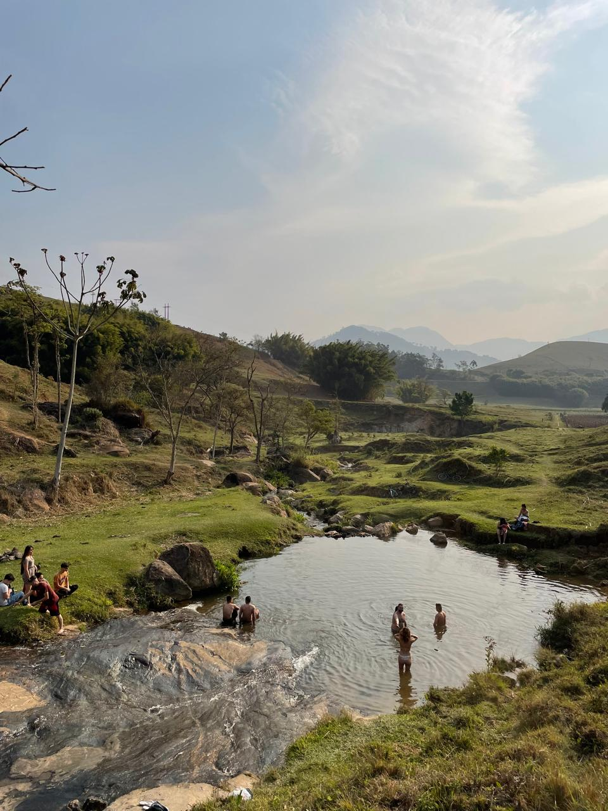
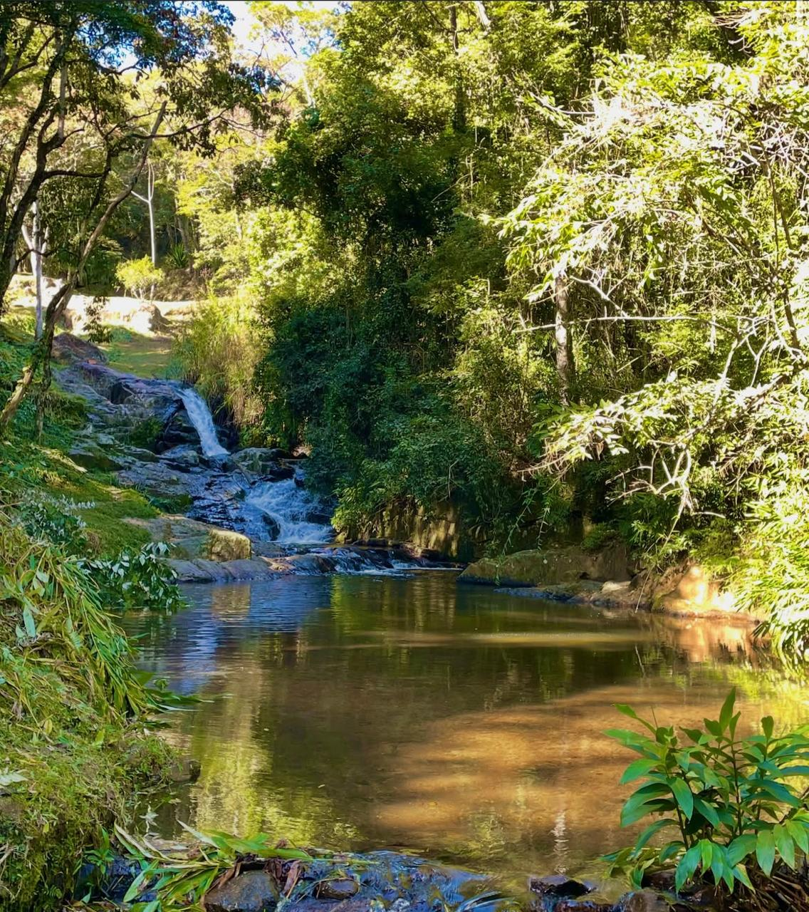
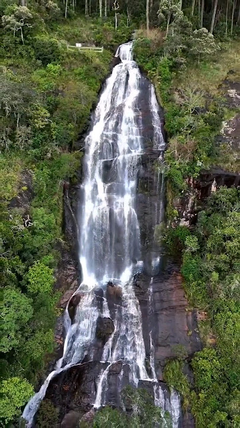
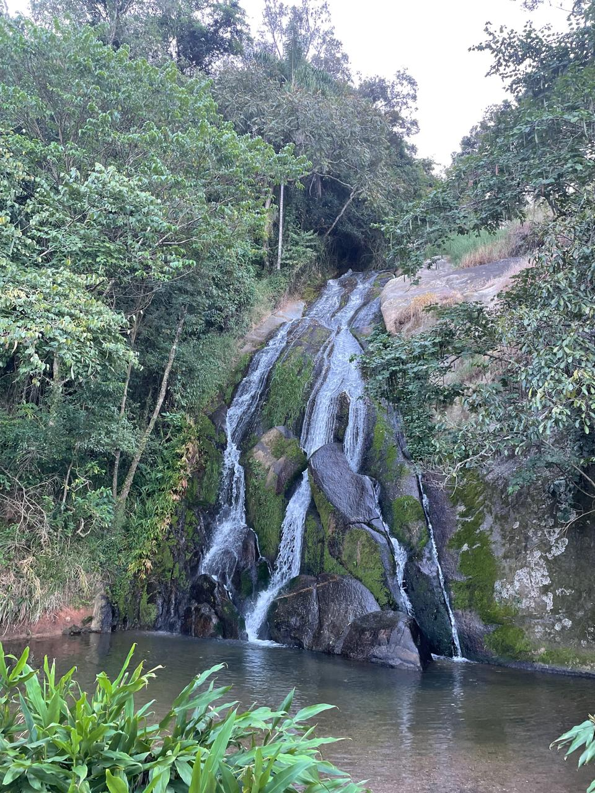

Águas cristalinas, piscinas naturais e trilhas entre a mata fechada da Mantiqueira.

DestaqueUma das mais procuradas da região, a Cachoeira do Mojolinha encanta pela queda d'água de aproximadamente 12 metros que deságua numa piscina natural de águas frias e transparentes. O acesso é feito por uma trilha leve de cerca de 20 minutos, ideal para famílias e iniciantes.

Com um ambiente mais reservado e tranquilo, a Cachoeira dos Amores é perfeita para casais que buscam um refúgio na natureza. A queda forma uma bela piscina natural cercada por vegetação nativa, criando uma atmosfera única e intimista.

Localizada no bairro do Paiol Grande, próxima à Pedra do Baú, a Cachoeira do Toldi é conhecida por sua imponente queda d’água, que encanta pela beleza e pelo cenário natural ao seu redor. De acesso difícil, o local é indicado principalmente para contemplação da natureza. Não é recomendada para banho, devido às condições de acesso e segurança.

Localizada no bairro do Serrano, a Cachoeira do Tobogã é uma ótima opção para quem busca um passeio tranquilo em meio à natureza. O acesso é fácil de carro, seguido por uma curta trilha de aproximadamente cinco minutos até a cachoeira. Com um ambiente tranquilo e acesso seguro, é um passeio indicado para toda a família, inclusive para crianças.
Montamos roteiros personalizados com transporte, guia e todas as dicas para você aproveitar ao máximo.
Fazer Orçamento